Как за 1 год мы снизили стоимость конверсии на 59%
С нуля запустить эффективную рекламную кампанию для новой клиники флебологии, не имеющей известности на рынке. Обеспечить стабильный поток заявок на первичные консультации, удерживая стоимость привлечения пациента в пределах заданного бюджета.
Центр флебологии «Флебоэксперт» расположен в трех городах — Пятигорск, Майкоп, Туапсе с суммарным населением до 500 000 человек.
Клиент обратился к нам в феврале 2022 с продвижением своей клиники с нуля — так как центр открылся в декабре 2021 и только начал выполнять свою деятельность.
Особенность в том, что это полностью частная клиника, которая еще не имеет заслуженной репутации.
Цель:получать постоянный поток новых заявок на первичную консультацию, где диагностируют вероятные сосудистые заболевания (варикоз, сосудистые звездочки, геморрой и прочие) по цене не выше 1300 руб.
Сложности: полностью работа с нуля в контексте + таргет (ранее нигде не продвигались), тестирование разных гипотез
Период работы, описанный в кейсе:февраль 2022 — апрель 2023 года
02
Подготовка к запуску рекламы
Что было сделано до запуска трафика:
Найдены и проанализированы все кейсы по данной тематике и около неё
Разработка нескольких стратегий
Анализ ниши на сезонность, анализ конкурентов, анализ ЦА
Прописаны офферы
Подготовлены креативы + рекламные тексты
Дополнительно настраивали цели в Я.Метрики и Google Analytics через Google Tag Manager
Сбор ключевых запросов
Анализ сайта не проводили, так как сайт изначально создавался в нашем агентстве и мы участвовали в разработке со стороны отдела маркетинга.
На первоначальном этапе было решено продвигаться в Я.Директ, основной бюджет перераспределили на него.
Также подготовили рекламные кампании в Facebook, но каких-то вменяемых результатов не получили, так как запуск рекламной кампании совпал с событиями от 24 февраля 2022 и вытекающими отсюда проблема с блокировкой площадки.
03
Определили УТП, чтобы закрывать «боли» потенциальных клиентов
При анализе ниши решили делать акцент на уникальных преимуществах клиники, основанных на опыте врачей и комфорте при процедурах.
Продвигали два основных направления - услуги Флебологии и Проктологии.
Получились такие УТП:
Лечение варикоза за 1 день без боли, разрезов и госпитализации.
Избавим от неприятных ощущений без боли и операций.
Узнайте, как за 1 прием врача избавиться от геморроя
Лазерное удаление геморроя за 10 минут
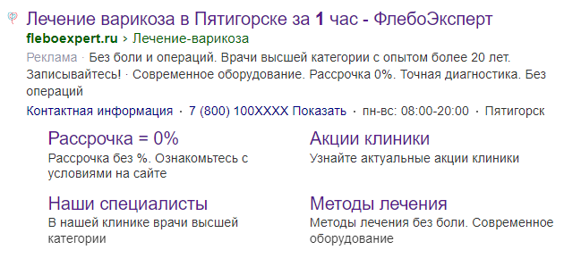
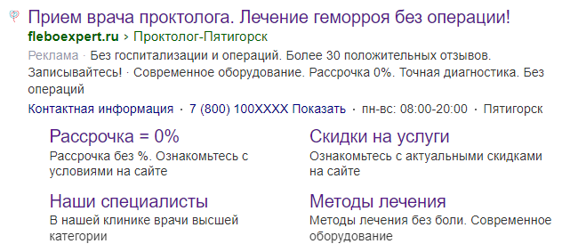
Также в объявлениях делали акцент на опыте и экспертности врачей:
- Запишитесь на консультацию к врачу высшей категории, доктору наук Виноградову Р.А. - Консультация проктолога с опытом более 7 лет
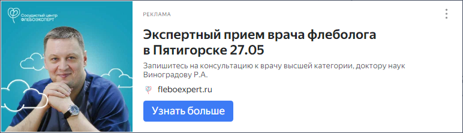
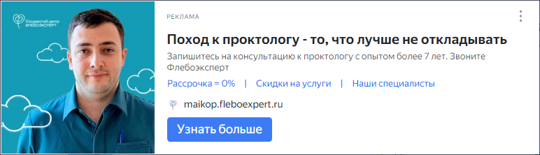
Согласовали с заказчиком акционные предложения и разработали креативы, которые использовали в кампаниях ретаргетинга и РСЯ, под них также разработаны отдельные посадочные страницы:
- Скидка 40% на комплексную диагностику при записи к флебологу до ##. - Прием врача флеболога + УЗИ вен 990 ₽ вместо 2500 ₽
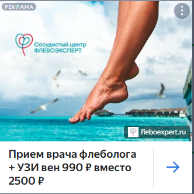
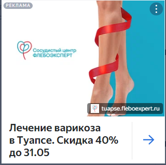
Дополнительно использовали различные варианты баннеров, в том числе сегментированные по ЦА: - корректировки ставок на мужскую и женскую аудиторию
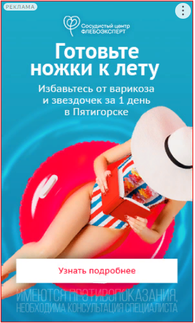
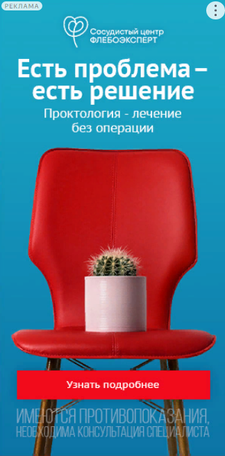
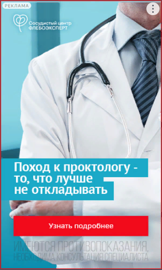
04
Результаты — контекстная реклама
Мы начали работать с центром флебологии с февраля 2022 года.
На момент начала работы с клиентом оптимизацию кампаний вели по цели «Отправка формы», а также «клик по номеру».
За первый месяц месяц работы получили 17 заявок по стоимости 2 198 ₽ — что значительно выше расчетной стоимости лида в 1 300 ₽.
Со второго месяца подключили динамический колл-трекинг, чтобы отслеживать работу каждого рекламного объявления, ввиду чего удалось увеличить количество конверсий до 36 — более чем в 2 раза и снизить стоимость лида на 42%.
В данной нише наблюдается выраженная сезонность:
- спрос значительно падает с июля по ноябрь и возрастает в промежутке апрель — июнь
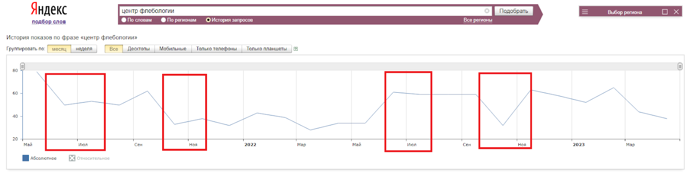
Падение спроса с июля по ноябрь в 2021 и 2022 г. по данным wordstat
В июне 2022 увеличили количество конверсий до 72, более чем в 4 раза по сравнению с февралем 2022, при этом снизили стоимость конверсии до 884 ₽ - что также ниже на 32% расчетной стоимости.
Падение спроса на услуги флебологии совпало с волнениями людей в период мобилизации в октябре-ноябре 2022 — суммарно за этот период получили 112 заявок по стоимости 1 812 ₽
Было принято решение оптимизировать рекламные кампании и снизить рекламный бюджет в РСЯ, сделать акцент на Поиске и дополнительно тестировать креативы в Мастере кампаний, который работает с оплатой за конверсии.
Благодаря такому подходу стоимость заявки постепенно снижается каждый месяц, с января 2023 г. стоимость лида не превышает расчетные показатели, достигнув 895 ₽ в апреле 2023 суммарно по услугам флебологии и проктологии.
За неполный месяц в мае 2023 получено 77 заявок — рекордное на данный момент количество, по стоимости 944 ₽.
Планы по развитию и текущие сложности
Основная сложность в эффективности конвертирования заявок в пациентов и дальнейшем увеличение LTV в том числе за счет высокомаржинальных услуг по операциям , так как у клиента не нет сквозной аналитики и CRM.
Эффективность можно значительно улучшить если внедрить сквозную аналитику и оптимизировать рекламу с учетом финальной выручки.
Сложность масштабирования после охвата основного спроса по горячим и теплым запросам. Далее тестируются несколько гипотез из которых только часть дает результат.
Например показывать рекламу людям, которые интересуются препаратами по флебологии. Делаем акцент на том, что только лечащий врач может подобрать профессиональное лечение и исключить осложнения.
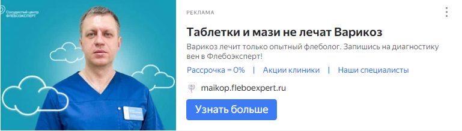
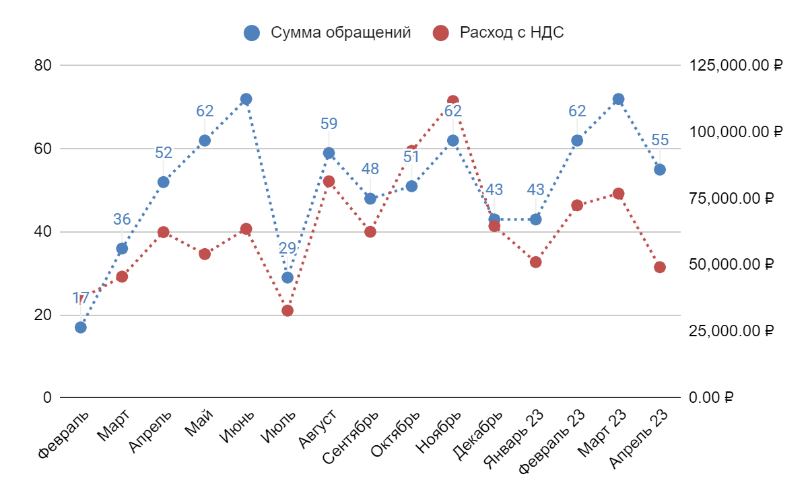
Всего с февраля 2022 по по апрель 2023 потрачено на рекламную кампанию: 959 433 рубля с НДС
Средняя цена за заявку: 1 257 рублей с НДС
Получено заявок: 763 лида
05
Хотите больше узнать о NUTS Digital?
Подписывайтесь на наш паблик в vk и Telegram канал, чтобы следить за новостями